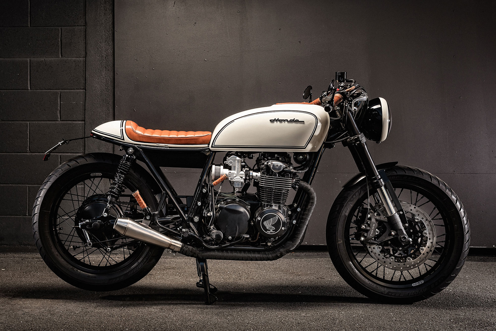
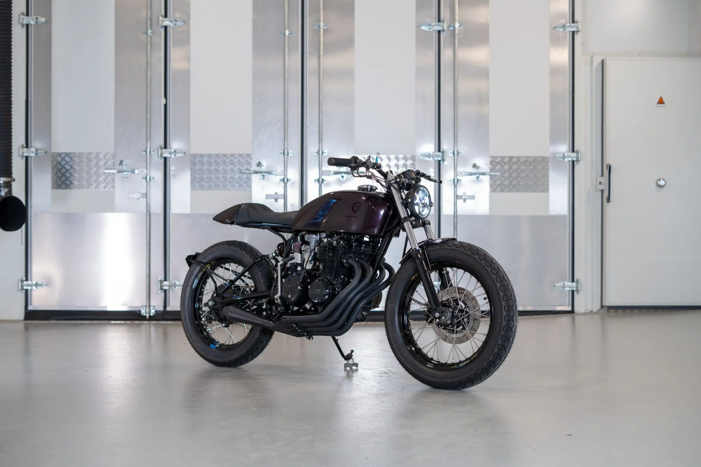

The Honda cafe racer is a distinctively styled motorcycle that pays homage to the iconic cafe racer culture of the 1960s. With its sleek lines, minimalist design, and aggressive riding position, the Honda cafe racer captures the essence of speed, style, and rebellion that defined the original cafe racer movement. Inspired by the stripped-down race bikes of yesteryear, the Honda cafe racer features a streamlined aesthetic, often characterized by a single-seat, rearset footpegs, and low-slung handlebars. This purposeful design not only enhances aerodynamics but also contributes to a more dynamic and engaging riding experience.
Powered by high-performance engines and advanced suspension systems, the Honda cafe racer delivers exhilarating performance on both urban streets and winding country roads. Its lightweight construction and responsive handling make it a joy to ride, while its distinctive styling sets it apart from the crowd.
More than just a motorcycle, the Honda cafe racer embodies a spirit of individuality and self-expression, inviting riders to customize and personalize their bikes to reflect their unique tastes and personalities. Whether roaring through city streets or participating in weekend cafe racer meetups, riders of the Honda cafe racer are part of a vibrant community united by a shared passion for speed, style, and the open road.